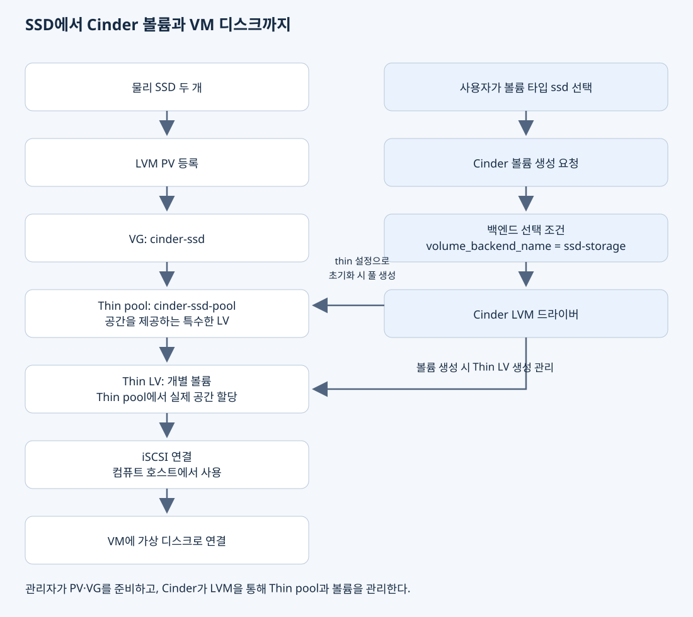

물리 SSD를 서버에 장착했다고 해서 OpenStack 사용자가 그 공간을 바로 가상 디스크로 사용할 수 있는 것은 아니다. Linux가 인식한 저장 장치를 LVM의 용량 관리 대상으로 등록하고, Cinder가 사용할 저장 공간과 생성 규칙을 설정해야 한다. 그 뒤 사용자가 볼륨을 생성하고 VM에 연결할 수 있다.
이 문서는 Ubuntu와 Kolla-Ansible 2026.1 기반의 단일 서버에서 SSD 두 개를 새로운 Cinder LVM 백엔드로 추가한 구성을 설명한다. 기존 loop 기반 백엔드는 유지했다. 확인된 범위는 새 SSD 백엔드에 1 GiB 볼륨을 생성하고, VM 연결 후 상태가 in-use로 바뀐 것까지다. VM 내부의 디스크 인식·파일시스템 생성·읽기와 쓰기는 아직 검증하지 않았다.
물리 용량에서 VM의 가상 디스크까지
저장 공간을 준비하는 순서와 사용자가 저장 공간을 요청하는 순서는 서로 이어진다.

Cinder는 볼륨의 생성·삭제·연결을 관리한다. LVM은 호스트의 블록 저장 공간을 논리적으로 할당한다. Nova와 컴퓨트 호스트의 가상화 계층은 연결된 볼륨을 VM에 디스크로 제공한다. Horizon은 이 작업을 요청하는 웹 UI다.
1. SSD를 PV로 등록하고 VG에 묶는다
SSD는 장착 시점부터 Linux의 블록 장치다. pvcreate는 SSD를 새 디스크로 바꾸는 명령이 아니라, 그 블록 장치를 LVM이 관리할 수 있도록 메타데이터를 준비하는 명령이다. 여기서 PV는 LVM의 Physical Volume이며 Kubernetes의 PersistentVolume과 다르다.
등록한 PV 두 개를 cinder-ssd라는 VG에 넣으면, LVM이 두 장치의 공간을 하나의 할당 대상으로 관리한다. VG는 용량과 구성 관계를 가진 관리 단위이며, VG를 만들었다고 별도의 디스크 장치가 하나 더 생기는 것은 아니다. 활성화된 LV를 만들면 Linux에 블록 장치로 나타난다.
예시에서는 약 476.94 GiB와 238.47 GiB의 PV를 묶어 약 715.41 GiB의 VG를 만들었다. 장치 식별, pvcreate, vgcreate와 출력 해석은 SSD를 PV로 등록하고 VG를 구성하는 방법에 설명한다.
2. VG 안에서 Thin pool과 LV로 공간을 할당한다
VG가 전체 용량의 관리 단위라면 Thin pool은 여러 Thin LV에 저장 공간을 제공하는 특수한 LV다. 개별 Thin LV는 이 풀에서 쓰기에 필요한 실제 공간을 할당받는다. VM에 100 GiB로 보이는 Thin LV를 만들더라도 처음부터 100 GiB의 데이터 공간을 모두 소비하지는 않는다.
따라서 “Thin pool이라는 LV 안에 Thin LV들을 만든다”는 표현은 풀의 공간을 할당받는 관계로 이해할 수 있다. 폴더 안에 파일을 넣거나 일반 LV 안에 별도의 PV·VG를 만들어 LVM을 다시 구성한 것은 아니다. 같은 LVM이 Thin pool과 개별 Thin LV 사이의 블록 매핑을 관리한다.
관리자가 vgcreate로 만든 것은 VG까지다. Thin pool은 Cinder에 lvm_type = thin을 설정하고 적용한 뒤, Cinder의 LVM 드라이버가 LVM을 통해 생성했다. VG 생성 직후에는 #LV=0이었고, Cinder 적용 뒤 cinder-ssd-pool이라는 약 679.64 GiB의 Thin pool이 관찰됐다. 사용자가 별도의 Thin pool 생성 명령을 실행한 구성은 아니다. VG 전체 용량과 Cinder가 보고하는 Thin pool 용량은 같은 숫자가 아니다.
기존 백엔드는 파일을 loop 장치로 연결한 뒤 LVM에 제공했고, 새 백엔드는 SSD를 직접 LVM에 제공했다. 이 차이와 할당 구조는 loop·VG·Thin pool·LV의 관계에서 설명한다.
3. Cinder에 새 VG를 사용하는 백엔드를 추가한다
VG를 만들기만 하면 OpenStack은 그 공간의 사용 방법을 알지 못한다. Cinder LVM 드라이버에 volume_group = cinder-ssd를 지정해야 한다.
기존 [lvm-1] 백엔드를 남겨 두고 [lvm-ssd] 백엔드를 추가했다. 새 백엔드의 선택용 이름은 ssd-storage다. 이 이름들은 역할이 다르다.
| 이름 | 종류 | 참조하는 곳 |
|---|---|---|
cinder-ssd |
LVM VG 이름 | volume_group |
lvm-ssd |
Cinder 설정 섹션 이름 | enabled_backends |
ssd-storage |
Cinder가 보고하는 백엔드 이름 | volume_backend_name 및 볼륨 타입 조건 |
ssd |
사용자가 선택하는 볼륨 타입 이름 | Horizon·OpenStack 볼륨 생성 요청 |
설정 키의 의미와 기존 백엔드를 보존하는 방법은 Cinder LVM 백엔드 설정에 정리했다.
4. Kolla-Ansible로 설정을 생성하고 적용한다
Kolla-Ansible이 관리하는 서비스 설정은 배포 과정에서 생성된다. 따라서 생성된 cinder.conf를 수정하는 대신 사용자 정의 설정을 별도 파일에 작성하고 병합했다.
genconfig로 생성 결과를 확인한 뒤 reconfigure --tags cinder로 적용했다. 실행 결과는 failed=0, unreachable=0이었고, Cinder의 풀 조회에서 새 백엔드가 up으로 보고됐다.
가상환경, 인벤토리, 생성된 설정, OpenStack 인증은 각각 다른 역할이다. 실행 절차와 오류 구분은 Kolla 설정 적용과 백엔드 확인에서 설명한다.
5. 볼륨 타입으로 사용자의 선택과 백엔드를 연결한다
Cinder의 내부 백엔드 이름을 사용자가 매번 직접 지정하는 대신, 볼륨 타입에 선택 조건을 넣는다. Horizon에 만든 ssd 타입에는 다음 Extra Spec을 설정했다.
volume_backend_name = ssd-storage
사용자가 ssd 타입으로 볼륨을 요청하면 Cinder 스케줄러가 이 조건과 용량 등 다른 조건을 만족하는 백엔드를 선택한다. 볼륨 타입을 생성한 것만으로 LV가 생기거나 공간이 예약되지는 않는다.
볼륨 타입과 VG·Thin pool의 차이, Horizon 설정 방법은 볼륨 타입으로 백엔드를 선택하는 방법에 정리했다.
6. 볼륨을 생성하고 VM에 연결한다
Horizon에서 ssd 타입의 1 GiB 볼륨 ssd-test를 생성했다. Cinder 조회 결과에서 백엔드가 ubuntu@lvm-ssd#ssd-storage로 표시됐고, LVM에서도 볼륨 UUID와 일치하는 이름의 Thin LV가 cinder-ssd-pool에 생성됐다.
생성 직후 볼륨은 available, 연결 정보는 빈 목록이었다. 이후 test-vm에 연결한 뒤 in-use 상태가 보고됐다. 이는 OpenStack의 연결 상태 확인이며, 게스트 OS에서 파일을 읽고 쓸 수 있다는 검증까지 포함하지는 않는다.
볼륨 생성, LVM과 Cinder의 대응 관계, VM 연결 및 아직 남은 검증은 Cinder 볼륨 생성과 VM 연결에 설명한다.
관찰된 상태와 검증 범위
| 확인 대상 | 관찰된 결과 | 확인할 수 있는 것 |
|---|---|---|
| SSD 준비 | 두 장치의 NVMe Sanitize 성공 로그 | 장치가 보안 삭제 성공을 보고함 |
| LVM | 두 PV가 cinder-ssd에 포함, 초기 VFree 약 715.41 GiB |
VG 구성 완료 |
| Kolla 적용 | failed=0, unreachable=0 |
해당 Ansible 실행 성공 |
| Cinder 백엔드 | ubuntu@lvm-ssd#ssd-storage, backend_state=up |
새 백엔드가 용량 통계를 보고함 |
| 실제 볼륨 | ssd-test와 대응하는 1 GiB Thin LV |
선택한 백엔드에서 볼륨 생성 |
| VM 연결 | 사용자가 in-use 전환 확인 |
Cinder가 사용 중 상태를 보고함 |
| 게스트 OS 및 I/O | 출력 없음 | 디스크 인식·마운트·읽기/쓰기 검증은 남아 있음 |
명령 블록은 확인 과정의 기록과 재현 예시다. 이미 구성된 장치에 초기화·PV 생성·VG 생성 명령을 반복 실행할 필요는 없다. 문서에는 SSD 시리얼과 서버 IP를 넣지 않았으며, 마스킹된 장치 경로는 실제 값으로 사용할 수 없다.